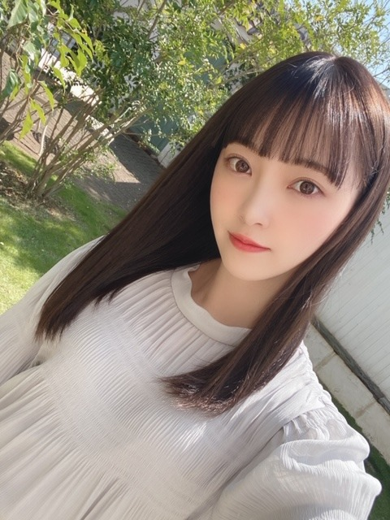
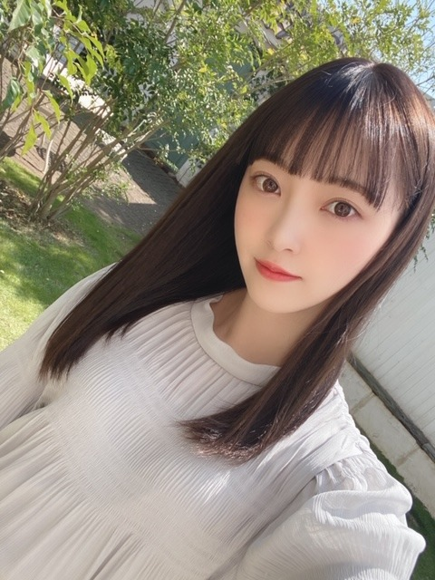

2020/0319Thuリンゴの余韻
こんにちは✿
昨日はレコメンに、みり愛と絢音が来てくれました
わ〜〜〜い
合間もずっとお喋りして
そのあとは2人がわたしのお家に泊まりにきて
それからまたお話ししてました(^-^)
楽しかったなぁ~
でも今ちょっと眠い...笑
今日も頑張りましょう!
レコメンパーソナリティもあと1回ですが
最後までよろしくお願いします
是非、聴いてください❁


室内だと暗め、陽に当たるとほんのり明るめ
になるよう染めていただいてから少し日にちが経ち
いい感じに色が抜けてきました
アッシュ系が好きなのでこれからも
くすみカラー色々挑戦したいです
このカラー名は Pale Mint Beige ❁ です
今日は天気がいいですね~ ❁
天気がいい日はお弁当を持って
牧場とか公園に行きたくなりますね


撮影スタジオが可愛かったので私服でパシャリ
この間1人で歩いていて4回つまずきました
久しぶりに履いた靴だからかな？とも思ったけど
スニーカーだしつまずいた場所段差もあったから
関係無さそう...
1人で転びそうになると恥ずかしいですよね
気をつけます
みなさんもお気をつけて...笑
では!
また更新しますね!
あ、皆さんおすすめの洋楽、
コメントにて教えてください!
こんにちは✿
昨日はレコメンに、みり愛と絢音が来てくれました
わ〜〜〜い
合間もずっとお喋りして
そのあとは2人がわたしのお家に泊まりにきて
それからまたお話ししてました(^-^)
楽しかったなぁ~
でも今ちょっと眠い...笑
今日も頑張りましょう!
レコメンパーソナリティもあと1回ですが
最後までよろしくお願いします
是非、聴いてください❁

室内だと暗め、陽に当たるとほんのり明るめ
になるよう染めていただいてから少し日にちが経ち
いい感じに色が抜けてきました
アッシュ系が好きなのでこれからも
くすみカラー色々挑戦したいです
このカラー名は Pale Mint Beige ❁ です
今日は天気がいいですね~ ❁
天気がいい日はお弁当を持って
牧場とか公園に行きたくなりますね
撮影スタジオが可愛かったので私服でパシャリ
この間1人で歩いていて4回つまずきました
久しぶりに履いた靴だからかな？とも思ったけど
スニーカーだしつまずいた場所段差もあったから
関係無さそう...
1人で転びそうになると恥ずかしいですよね
気をつけます
みなさんもお気をつけて...笑
では!
また更新しますね!
あ、皆さんおすすめの洋楽、
コメントにて教えてください!
2020/03/19 13:00
コメント(482)
ascenceさんのabout you
未央奈ちゃん、こんにちは〜
特にコメントすることは
なかったんだけど…（苦笑）
そのオシャンティな髪色の名前って
もしかして未央奈ちゃん命名なの？
レコメンでそういう話が
あったような、無かったような…
あとは、洋楽ですか？
特に…
守備範囲外なもので…
スミマセン…
僕は何しにここに来たんでしょうか？
スミマセン…
では。
特にコメントすることは
なかったんだけど…（苦笑）
そのオシャンティな髪色の名前って
もしかして未央奈ちゃん命名なの？
レコメンでそういう話が
あったような、無かったような…
あとは、洋楽ですか？
特に…
守備範囲外なもので…
スミマセン…
僕は何しにここに来たんでしょうか？
スミマセン…
では。
みおなほんっとにかわいい！！！
女子の憧れの憧れです
いつか握手会行ってお話ししてみたいな
レコメンも後一回頑張ってください！！！
私のおすすめの洋楽は
girl in the mirror
If I can't have you
without you
です！！
もしよかったらコメント欄に来た洋楽少しまとめてブログに載せてくれたら洋楽好きな私的には凄く嬉しいです
女子の憧れの憧れです
いつか握手会行ってお話ししてみたいな
レコメンも後一回頑張ってください！！！
私のおすすめの洋楽は
girl in the mirror
If I can't have you
without you
です！！
もしよかったらコメント欄に来た洋楽少しまとめてブログに載せてくれたら洋楽好きな私的には凄く嬉しいです
自分はNCS、NoCopyrightSoundsの曲にハマってます
あとはsymphonyとか
是非聴いてみてください！
あとはsymphonyとか
是非聴いてみてください！
ブログ更新ありがとう
未央奈ちゃん可愛い
レコメン来週も楽しみ
未央奈ちゃん可愛い
レコメン来週も楽しみ
最近聴いてるのはジャミロクワイの「Virtual Insanity」かなー
髪色ｶﾜ(・∀・)ｲｲ!!あ、ブログ更新ありがとうございます!絢音ちゃんとみり愛ちゃんくるんだもんね!楽しみ!レコメン聴くよ。レコメン卒業悲しいけど、、。
All Tvvins好きです
未央奈〜
大好き❤
大好き❤
やわたのプロテオグリカン！ 笑
洋楽おすすめ・・
justin bieber 「intentions」
男の人が好きな女の人をただただ褒めちぎる歌詞です！
ビートもザ・今の洋楽って感じ。
the weeknd 「blinding lights」
マイケルジャクソン味がある曲。
これもまた女の人を褒めちぎる歌詞だけど、ちょっとキザな感じ。
roddy ricch 「the box」
女の人が引きつってるっぽい音が出てくるビートが特徴的。
tiktok経由で流行っている曲なので、気分をブチ上げたい時とかにピッタリ！
初コメントです。これからも応援してます！
justin bieber 「intentions」
男の人が好きな女の人をただただ褒めちぎる歌詞です！
ビートもザ・今の洋楽って感じ。
the weeknd 「blinding lights」
マイケルジャクソン味がある曲。
これもまた女の人を褒めちぎる歌詞だけど、ちょっとキザな感じ。
roddy ricch 「the box」
女の人が引きつってるっぽい音が出てくるビートが特徴的。
tiktok経由で流行っている曲なので、気分をブチ上げたい時とかにピッタリ！
初コメントです。これからも応援してます！
Demi LovatoのWarrior聞いてみてください
初コメ失礼します！
当方30代ですが、いつも何かにくじけたり失敗したときに「よし、たちあがろう、やるか！」とスイッチを入れたいときに必ず聞く曲です。
arcade fireさんで「wake up」って曲です。
ベンスティール主演映画LIFEで初めて知り、それ以来ずっと聴いてます。
不思議ですが、スイッチ入ります
当方30代ですが、いつも何かにくじけたり失敗したときに「よし、たちあがろう、やるか！」とスイッチを入れたいときに必ず聞く曲です。
arcade fireさんで「wake up」って曲です。
ベンスティール主演映画LIFEで初めて知り、それ以来ずっと聴いてます。
不思議ですが、スイッチ入ります
レコメン！面白すぎた！！
元プリン会最高すぎでしたー！
終始やっぱすごい仲いいんだなーって思いました
来週で最後かー なんか寂じぃ
のりほりコンビもうあと1回となると.......
4回つまずくのはやばいね笑
そういう所も可愛いよ
堀ちゃんらしいね！笑笑
洋楽個人的にはQueenがおすすめです！
映画のボヘミアン・ラプソディもやったので
歌詞などが心に響きました！
聞いてくれると嬉しいです！！ ♂️⤵️
ブログ更新ありがとう！
大好き！
元プリン会最高すぎでしたー！
終始やっぱすごい仲いいんだなーって思いました
来週で最後かー なんか寂じぃ
のりほりコンビもうあと1回となると.......
4回つまずくのはやばいね笑
そういう所も可愛いよ
堀ちゃんらしいね！笑笑
洋楽個人的にはQueenがおすすめです！
映画のボヘミアン・ラプソディもやったので
歌詞などが心に響きました！
聞いてくれると嬉しいです！！ ♂️⤵️
ブログ更新ありがとう！
大好き！
好きな洋楽はCashCashかな?聴いてみてね!花粉とか気を付けてね(^^)レコメン楽しみ!!!また更新してね!
おすすめの洋楽はブラックアイドピーズのpump it、バッグストリートボーイズの曲名は忘れたけど、一時期めっちゃ聴いてた！
昨日のレコメン面白かったです！
旧プリン会に変わる名前がわからずモヤモヤしていますので、いつか教えて欲しいです！！！
昨日のレコメン面白かったです！
旧プリン会に変わる名前がわからずモヤモヤしていますので、いつか教えて欲しいです！！！
未央奈さん、僕の洋楽おすすめはAlicia KeyのUnderdogという曲です。弱者という意味ですが、曲調も歌詞も力強く、元気をくれます。ぜひ、聞いてください!!
これからも応援してます！一生、推しメンです!!
これからも応援してます！一生、推しメンです!!
ブログ更新ありがとう！
昨日のレコメン、未央奈ちゃんがいつも以上に楽しそうで、プリン会のわちゃわちゃ感に癒されました⸜(*ˊᵕˋ*)⸝その後お泊まりしたっていうのも可愛すぎる！
最終回だと思うと次の水曜日が来てほしくないな…なんて思ってしまうけど、噛み締めて聴きます。楽しい放送になりますように。
未央奈ちゃんの今の髪色すごく好きです︎☺︎ サラサラで美しい髪、本当に憧れるし、写真も全部可愛すぎる…！
私もよくこけるんだけど、油断からなのかスニーカーの方がつまずく率高いかも…笑
怪我しないように気をつけてね(＞＜)
洋楽はあまり詳しくないんだけど、Connie TalbotさんのCount On Meの映像とか歌声が好きで、日本語訳を見たら歌詞も素敵で家族で話題になった！TikTokで有名な曲だけど、よかったらフルで聴いてみて︎☺︎
昨日のレコメン、未央奈ちゃんがいつも以上に楽しそうで、プリン会のわちゃわちゃ感に癒されました⸜(*ˊᵕˋ*)⸝その後お泊まりしたっていうのも可愛すぎる！
最終回だと思うと次の水曜日が来てほしくないな…なんて思ってしまうけど、噛み締めて聴きます。楽しい放送になりますように。
未央奈ちゃんの今の髪色すごく好きです︎☺︎ サラサラで美しい髪、本当に憧れるし、写真も全部可愛すぎる…！
私もよくこけるんだけど、油断からなのかスニーカーの方がつまずく率高いかも…笑
怪我しないように気をつけてね(＞＜)
洋楽はあまり詳しくないんだけど、Connie TalbotさんのCount On Meの映像とか歌声が好きで、日本語訳を見たら歌詞も素敵で家族で話題になった！TikTokで有名な曲だけど、よかったらフルで聴いてみて︎☺︎
可愛すぎて辛いです。段差には気をつけてね笑
髪色すてきです！！
私の中で堀さんはショートのイメージが強かったのですが(初めて堀さんを見たのがショートの写真であまりの可愛さに衝撃を受けた為)
最近のロングの堀さんも美人さんで大人っぽくて素敵です！！やっぱり可愛い人はどんな髪型も似合いますね！！
父の影響でThe Beatlesとoasisは聴いています。
私のオススメはoasisの「Champagne Supernova」と「Half The World Away」です。
「Champagne Supernova」は
歌詞が難解ですが、メロディが最高で早朝や深夜でもピッタリの曲で「Half The World Away」は歌詞もメロディも良くて元気付けられる優しい曲です。
oasisの曲をほとんど作詞、作曲しているフロントマンのノエルギャラガーさんは普段は口も汚く滅茶苦茶な方ですが、彼から作られる曲は前向きで隣で背中を押してくれる様な優しい曲ばかりです！
洋楽は曖昧な表現や個人的な場面を歌っていたり訳などの解釈が違っていたりしますが
どんな人にも共感できる所があって、色々な解釈ができるのが楽しいですよね！
私の中で堀さんはショートのイメージが強かったのですが(初めて堀さんを見たのがショートの写真であまりの可愛さに衝撃を受けた為)
最近のロングの堀さんも美人さんで大人っぽくて素敵です！！やっぱり可愛い人はどんな髪型も似合いますね！！
父の影響でThe Beatlesとoasisは聴いています。
私のオススメはoasisの「Champagne Supernova」と「Half The World Away」です。
「Champagne Supernova」は
歌詞が難解ですが、メロディが最高で早朝や深夜でもピッタリの曲で「Half The World Away」は歌詞もメロディも良くて元気付けられる優しい曲です。
oasisの曲をほとんど作詞、作曲しているフロントマンのノエルギャラガーさんは普段は口も汚く滅茶苦茶な方ですが、彼から作られる曲は前向きで隣で背中を押してくれる様な優しい曲ばかりです！
洋楽は曖昧な表現や個人的な場面を歌っていたり訳などの解釈が違っていたりしますが
どんな人にも共感できる所があって、色々な解釈ができるのが楽しいですよね！
未央奈さん美しすぎます！！
わたしはCharlie Puthさんの
AttentionとHow Longが好きです。
あとはSuckerですね。
Youtubeでこの曲に合わせてダンスしている動画もいくつかあって、とってもかっこいいのでぜひそちらも合わせて見てみてください
わたしはCharlie Puthさんの
AttentionとHow Longが好きです。
あとはSuckerですね。
Youtubeでこの曲に合わせてダンスしている動画もいくつかあって、とってもかっこいいのでぜひそちらも合わせて見てみてください
QuarashiのChicagoオススメです
もちろん聴くよ!
僕も、今日4回なんてことない段差に躓きました笑
気を付けてくださいね笑 僕も気を付けます
僕のオススメは少し古いかもなんですが、Oasis（オアシス）っていうグループです！最近CMとかで耳にするので是非聴いてみてください！
気を付けてくださいね笑 僕も気を付けます
僕のオススメは少し古いかもなんですが、Oasis（オアシス）っていうグループです！最近CMとかで耳にするので是非聴いてみてください！
未央奈ちゃん髪色めっちゃ似合ってるよー
髪型もめっちゃ良い
くすみ系カラー良いよね☆ ベージュ系お洒落ですね
撮影スタジオ可愛い場所ですねー
なかなかライブが中止のご時世だから今月2つ見れる機会逃したけど次のライブまで楽しみにしてるよー☆
あっオススメの洋楽は2曲あって
Ja RuleのSo Much Pain
Eric B. & RakimのKnow The Ledge
です。
ミドルスクールというか昔のHip Hopです
未央奈ちゃん2Pac聞くんだねー

以外でしたわ〜
8バスラと2期ライブのライブ神最高だったよー
また見れるの楽しみにしてます
髪型もめっちゃ良い
くすみ系カラー良いよね☆ ベージュ系お洒落ですね
撮影スタジオ可愛い場所ですねー
なかなかライブが中止のご時世だから今月2つ見れる機会逃したけど次のライブまで楽しみにしてるよー☆
あっオススメの洋楽は2曲あって
Ja RuleのSo Much Pain
Eric B. & RakimのKnow The Ledge
です。
ミドルスクールというか昔のHip Hopです
未央奈ちゃん2Pac聞くんだねー
以外でしたわ〜
8バスラと2期ライブのライブ神最高だったよー
また見れるの楽しみにしてます
未央奈ちゃん！ブログ更新ありがと！！
未央奈ちゃん2pac聞くの？？インスタで見たけど自分もめっちゃ2pacさんの曲聞きます！2pacさんの「I get around」「Life Gose On」オススメです！あとぜひNaughty By Natureの「hiphop hooray」聞いてみてください！テンション上がります！
未央奈ちゃん2pac聞くの？？インスタで見たけど自分もめっちゃ2pacさんの曲聞きます！2pacさんの「I get around」「Life Gose On」オススメです！あとぜひNaughty By Natureの「hiphop hooray」聞いてみてください！テンション上がります！
更新ありがとう 最近更新頻度高くて本当に嬉しい！
おすすめの洋楽はBlur-Song 2 です！聴いてみてください！
おすすめの洋楽はBlur-Song 2 です！聴いてみてください！
ブログ更新ありがとう！
写真綺麗で可愛い！
レコメン最後まで聴きます！！
ZeddのBeautiful Nowがオススメです！
写真綺麗で可愛い！
レコメン最後まで聴きます！！
ZeddのBeautiful Nowがオススメです！
ブログとかインスタとかいつもいつも更新ありがとう！
休校中ですることないんでとてもワクワクします！
暇やけん未央奈のコスメとか真似してます！！
洋楽今は聞かないんだけど、昔はOn Our Wayって曲を聞いてたなー！ユニバのCMではまった曲！
未央奈って加工アプリとか使ってますか？もし使ってたら何使ってるか教えてほしいです！
休校中ですることないんでとてもワクワクします！
暇やけん未央奈のコスメとか真似してます！！
洋楽今は聞かないんだけど、昔はOn Our Wayって曲を聞いてたなー！ユニバのCMではまった曲！
未央奈って加工アプリとか使ってますか？もし使ってたら何使ってるか教えてほしいです！
ブログ更新ありがとう！
昨日のレコメン聞きました！元プリン会？とても面白かっです！
おすすめの洋楽は、、、
The Beatlesの「Let It Be」と
Maroon5の「Memories」です！
めっちゃいい曲なので是非聴いて欲しいです！
次のブログも楽しみにしてます！
昨日のレコメン聞きました！元プリン会？とても面白かっです！
おすすめの洋楽は、、、
The Beatlesの「Let It Be」と
Maroon5の「Memories」です！
めっちゃいい曲なので是非聴いて欲しいです！
次のブログも楽しみにしてます！
レコメン聞きました。お三方だーいすき！
Earth,Wind&Fire の Got to Get You Into My Life はいかがでしょうか（ビートルズのカバー）
ちなみに蘭世さんはEWFのSeptemberが好きだとおっしゃっていました
Earth,Wind&Fire の Got to Get You Into My Life はいかがでしょうか（ビートルズのカバー）
ちなみに蘭世さんはEWFのSeptemberが好きだとおっしゃっていました
未央奈ブログ更新ありがとう！！
可愛い！！
Rewrite The starsが聞いてて迫力あるので
是非聴いて欲しいです！！
お願いします！！
可愛い！！
Rewrite The starsが聞いてて迫力あるので
是非聴いて欲しいです！！
お願いします！！
snow patrolのchocolate
5second of summerのold me
the 1975のsincerity is scary
5second of summerのold me
the 1975のsincerity is scary
こんにちは。素敵な私服ですね！
最近、おすすめなのは
Armin van Buuren – Unlove you (feat Ne-Yo)
ですね。
もしよかったら是非。
最近、おすすめなのは
Armin van Buuren – Unlove you (feat Ne-Yo)
ですね。
もしよかったら是非。
レコメン！絶対聴きます
楽しいラジオを今までありがとうございました
そして本当にお疲れ様です
おすすめの洋楽は
The Sundaysの「Here's Where The Story Ends」という曲です
古いですが（笑）春の陽気にぴったりのそれこそお弁当持ってお出かけしたくなる爽やかさと美しさもある曲です
楽しいラジオを今までありがとうございました
そして本当にお疲れ様です
おすすめの洋楽は
The Sundaysの「Here's Where The Story Ends」という曲です
古いですが（笑）春の陽気にぴったりのそれこそお弁当持ってお出かけしたくなる爽やかさと美しさもある曲です
こんにちは
今日も1日頑張りましょう。
オススメの洋楽はpitch blackのit's All RealとエミネムのGodzillaです。
英語はわからないので雰囲気で楽しんでます。
これからも体調には気をつけて頑張ってください。
応援してます。
今日も1日頑張りましょう。
オススメの洋楽はpitch blackのit's All RealとエミネムのGodzillaです。
英語はわからないので雰囲気で楽しんでます。
これからも体調には気をつけて頑張ってください。
応援してます。
のりさんと旧プリン会のレコメン！とても楽しかったよ！
新しい名前が気になって仕方ない！
あの後は３人でお泊まり会したんだね！楽しそう！
よく聴く洋楽はエアロスミス、BACK STREET BOYS、KISS、BON JOVI、QUEENをよく聴くよ！
新しい名前が気になって仕方ない！
あの後は３人でお泊まり会したんだね！楽しそう！
よく聴く洋楽はエアロスミス、BACK STREET BOYS、KISS、BON JOVI、QUEENをよく聴くよ！
USAforAfricaのWe are the worldがおすすめです
書き忘れ！
U2も聴きます！
U2も聴きます！
みおなー
大好き！
これからもダンス応援してる！！！
大好き！
これからもダンス応援してる！！！
いつもお疲れ様です！そしていつも可愛いをありがとうございます！
Two door cinema clubのWhat you knowがおすすめです。
ぜひ聞いてみてください。
Two door cinema clubのWhat you knowがおすすめです。
ぜひ聞いてみてください。
未央奈ブロありがとう〜
レコメンお疲れ様
私服めちゃめちゃ可愛い
レコメンお疲れ様
私服めちゃめちゃ可愛い
ブログ更新ありがとう！
昨日のレコメンすごい楽しかった
ちょっと多いけど、自分の好きな洋楽載せておくからぜひ聞いてください！
【オルタナティブ】
オールタイムロウの「Time-Bomb」「Nice2KnoU」
シンプルプランの「Opinion Overload」
【ポップ】
アランウォーカーの「On MY Way」「All Falls Down」「End of Time」
「On MY Way」がオススメ
ラウヴの「F**k, I’m Lonely」
ジェシー・マッカートニー「Shake」
ジョナス・ブルー「By Your Side」
【EDM系】
クルーウェラ「Greenlights」
ダディーヤンキー「Limbo」
Loud Luxury「Body」
「Body」は歩いてる時に聞いてるとめちゃくちゃテンション上がるよ
体調には気をつけてねー
可愛い❤︎
めっちゃ髪色好き！！
way Back Home がいいですよ！
めっちゃ髪色好き！！
way Back Home がいいですよ！
○○○会やっぱ仲良いね〜
レコメン聴いててもすごく伝わったし楽しかった！
洋楽はpentatonixっていうアカペラグループが凄くてよく聴いてるよ
日本の曲もカバーしてたりしてて聴いてて楽しいよ！
レコメン聴いててもすごく伝わったし楽しかった！
洋楽はpentatonixっていうアカペラグループが凄くてよく聴いてるよ
日本の曲もカバーしてたりしてて聴いてて楽しいよ！
未央奈ちゃんいつも髪綺麗だよね！
お疲れ様です。
レコメンあと1回楽しんでください。
オススメの洋楽
エミネムのrap God
ギャング・スターのmass appeal
ウータン・クランのC.R.E.A.M
などですね。
ラップばっかりですいません。
今後の活躍も期待してます。
頑張ってください。
レコメンあと1回楽しんでください。
オススメの洋楽
エミネムのrap God
ギャング・スターのmass appeal
ウータン・クランのC.R.E.A.M
などですね。
ラップばっかりですいません。
今後の活躍も期待してます。
頑張ってください。
ブログ更新ありがとうございます。
オススメのアーティストはDNCEです！
その中のアルバムのDNCEは全ていい曲です！
DNCEとは元Jonas BrothersのJoe Jonasがボーカルを務めるバンドです！他にも韓国人の女性ギタリスト イ・ジンジュという方もいます！
是非聴いてみてください！
後、Coldplayというアーティストも最高です！
その中のChris MartinはThe ChainsmokersやAviciiの曲にも参加していて声は聞いた事あると思います！
とりあえずviva la vidaを聞いてください！
オススメのアーティストはDNCEです！
その中のアルバムのDNCEは全ていい曲です！
DNCEとは元Jonas BrothersのJoe Jonasがボーカルを務めるバンドです！他にも韓国人の女性ギタリスト イ・ジンジュという方もいます！
是非聴いてみてください！
後、Coldplayというアーティストも最高です！
その中のChris MartinはThe ChainsmokersやAviciiの曲にも参加していて声は聞いた事あると思います！
とりあえずviva la vidaを聞いてください！
アッシャーのDon't Waste My Timeがおすすめです
でも、やっぱり上がっていきたいときはカルヴィン・ハリス聴きます！DJなんですけど、Slideって曲は小さい子の声の部分があって、それが空耳で"I might"って言うところがあるんだけど、その部分が「甘い！」って聴こえて可愛いですし、曲も夏を感じさせるような曲です。これを僕は激推しします！！！
でも、やっぱり上がっていきたいときはカルヴィン・ハリス聴きます！DJなんですけど、Slideって曲は小さい子の声の部分があって、それが空耳で"I might"って言うところがあるんだけど、その部分が「甘い！」って聴こえて可愛いですし、曲も夏を感じさせるような曲です。これを僕は激推しします！！！


初めてコメントします！！
僕のオススメの洋楽はoasis、The 1975、Red Hot Chili Peppersです！ロックバンドが大好きなので聞くとテンション上がる曲も多いです！The 1975はロックな曲もあるし聞くと踊れるようなオシャレな曲もあるのでぜひ聞いてみてください！